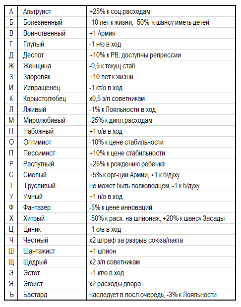
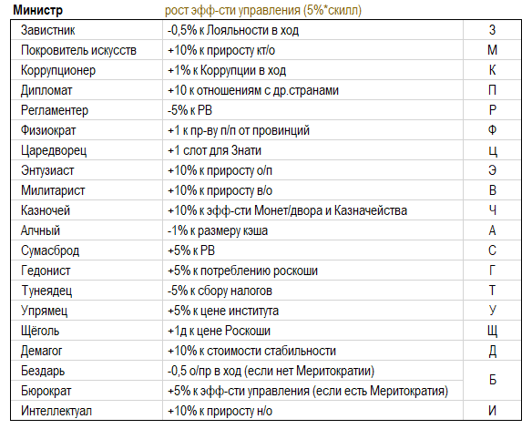
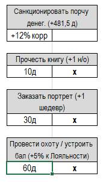

В игре представлены следующие персонажи: правители стран (монархи, главы государств-республик), их дети, советники, военные деятели, учёные, деятели культуры, философы, торговцы.
Все персонажи имеют два показателя – скилл (ценность), обозначаемый цифрой в диапазоне от 1 до 6 (чем выше, тем ценней) и персональные характеристики (черты характера, перки), обозначаемые буквой.
Уровень персонажа – величина заданная с рождения, изменяется в ходе игры по случайным событиям.
Уровень персонажа в первую очередь определяет это способности и ценность: чем выше скилл правителя, тем больший авторитет и способности к управлению он имеет, чем выше скилл поэта – тем большую ценность он имеет как деятель богемы, чем выше показатель у полководца, тем успешней он командует армией и т.п.
Персонажи каждой группы имеют различные персональные характеристики.
Перки:
Перки могут дополняться и меняться по случайным событиям. Дополнительный (второй) перк может получить персонаж-ребенок при прохождении обучения. Для этого нужно потратить указанное в балансе число кт/о.
Персонажи появляются в результате случайных событий (рождение детей) или действий игрока (поступление на гос.службу). Игрок может выбрать - нанимать ли персонажа к себе на службу или нет. Новые возможные советники появляются в предбалансе — игрок в заявке на ход определяет, принимает ли он данного персонажа на службу или нет.
Игрок может увольнять персонажей, заменяя их на других. Торговцев и Мореплавателей можно иметь не более 2-х, Полководцев – не более 3-х, членов семьи (включая правителя) – не более 5, остальные персонажи – не более 1 каждой роли. Знать увольнять нельзя.
Обычно персонажи исполняют свои роли до наступления смерти. Если в балансе напротив записи о персонаже появляется надпись «Умер», то это означает, что в текущий ход его уже нет, эффекты, которые влечет данный персонаж не будут доступны в данный ход. Баланс по итогам хода уже не будет содержать запись о данном персонаже.
Великие люди – случайные персонажи, выполняющие определенные функции (см. выше).
Правители стран не могут быть Полководцами за исключением, имеющих перк С (Смелый) и достигших 20-ти летнего возраста. Скилл Полководца влияет на увеличение силы Армии, Мореплавателя — силы Флота.
Содержание персонажей (за исключением, Знати и Бизнесменов) обходится казне казне в 3д за скилл.
Персонажи имеют имя, предустановленную продолжительность жизни, скилл отражающий их уровень компетенции и перки.
Советники одной страны могут в результате случайного события убиты или раньше срока покинуть свой пост.
Игроки, представляющие страны одной культурной группы, могут передавать при взаимном согласии персонажей из страны в страну. Передать персонажа можно при том условии, что он был нанят игроком (т.е. хотя бы 1 ход принадлежал ему). За 1 ход можно передать/принять не более 1 персонажа (персонаж может перейти в другую страну 1 раз за свою жизнь). Изгонять принятую на службу знать и передавать её др. странам нельзя.
Министр — советник, доступный в таком качестве для найма. Кроме того, Министром можно назначать любого персонажа из состава Знати.
Министр повышает эфф-сть управления в стране и имеет дополнительные особые качества, определяемые имеющимися у него перками.
Правители и члены семей других стран могут заключать браки для продолжения своих династий.
Браки делятся на династические (с представителями правящих домов других стран) и браки с представителями местной знати. Брак возможен с 20-ти летнего возраста.
Брак с представителями местной знати возможен всегда, если правитель не женат. Такой брак снижает скилл правителя на -1, так как он не смог найти "более достойного себя варианта".
Династический брак – брак с представителем другого гос-ва. Он не снижает скилл правителя (а иногда его увеличивает).
При таком браке у обоих стран вносится соответствующая запись в акты дипломатических состояний. Династический брак повышает престиж стран. Запись о дин.браке сохраняется в балансе 5 ходов с момента его заключения. Персонаж женского пола, участвующий в таком браке исключается из баланса, а персонаж мужского пола получает запись, подтверждающую его брак.
Игроки самостоятельно договариваются об имущественной стороне брачного договора (кто и в каком размере получает приданое по такому браку, если приданное имеет место).
При заключении династического брака жених может взять один из перков, которыми владеет его жена. Если при заключении династического брака скилл невесты выше скилла жениха, то Правитель может получить на выбор, либо +1 к своему уровню, либо перк жены. В обоих случаях об указанных последствиях брака игроки сообщают в своих заявках на ход.
Уния — особый вид династического брака, при котором женятся правители двух стран (женский персонаж и мужской). При этом в балансах стран после брака остаются прежние правители. Дети от брака отражаются в каждом балансе отдельно.
Дети появляются только у правителей страны (другие члены семьи, даже будучи в браке, детей де-факто не имеют).
В ход может появиться не более 1 ребенка. Общее число детей от брака не может превышать 3.
Пол будущего ребенка, его имя, перк и скилл определяется также случайным способом.
Фертильный возраст персонажей: 20 – 60 лет.
В случае, если в балансе на начало хода игрок напротив записи о правителе видит слово «Умер!» это означает, что в этот ход произошла смерть правителя. Игроку в заявке на данный ход следует назначить наследника.
При этом соблюдаются следующие правила:
1) Если к моменту смерти текущего правителя имелось несколько наследников, то престол переходит к старшему наследнику мужского пола. Передача трона другому наследнику влечет снижение стабильности на -0,5. Другие сыновья умершего правителя исключаются из баланса.
2) Наследование трона персонажем женского пола (дочерью) допускается только в том случае, когда нет прямых наследников мужского пола. Страна в этом случае получает штраф к стабильности -1 стаб.
3) В случае смерти правителя, не имеющего наследников, при условии заключения страной династического брака в прошлом (запись о дин.браке не убрана из баланса), трон в стране может занять представитель страны, с которой был заключен династический брак. О такой возможности Ведущий объявляет в итогах хода. Данный шаг не рассматривается как захват власти и основание новой династии, поэтому не влечет потерю стабильности.
Кандидатом на трон из др.страны, связанной дин.браком могут быть только мужские персонажи.
4) Если ни один из вышеуказанных сценариев престолонаследия не проходит, то происходит смена правящей династии. Власть переходит к случайному персонажу, отраженному в балансе страны. Стабильность при этом падает на -1.
Страна, не имеющая во главе правителя (период безвластия) не может изменять настройки ВП.
В странах с республиканской ФП смена правителя осуществляется на рандомного в установленное время.
В республиках в ход выборов предоставляются 2 альтернативных кандидата, один из которых по решению игрока становится правителем страны.
Персонажи, возглавляющие армии, находятся в месте расположения соответствующих вооруженных сил, члены его семьи и советники - в столице страны.
Закреплять Полководца от одной армии в другую можно при нахождении обоих армий в одной локации.
Игрок от лица Правителя своей страны может совершать одно из следующих действий:
— Санкционировать порчу денег. Доступно при наличии Монет/двора. Увеличивает Коррупцию в стране. Даёт д.
— Прочесть книгу. Стоит указанное в балансе кол-во денег. Возможно с 15-ти лет. Даёт н/о.
— Заказать портрет. Стоит указанное в балансе кол-во денег. Возможно при наличии Персонажа-Художника. Даёт кт/о и шедевр в коллекцию страны.
— Организовать пир/охоту. Возможно с 15-ти лет, если есть Дворец или Угодья. Стоит указанное в балансе кол-во денег. Повышает Лояльность в стране.
